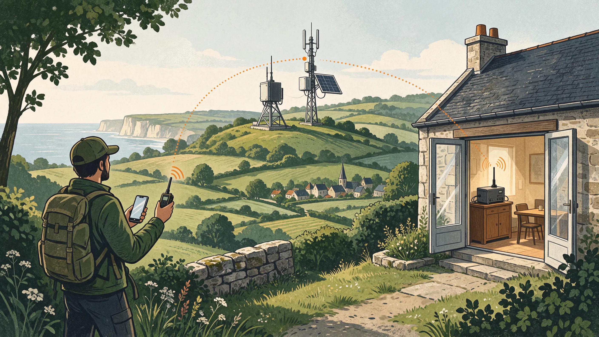

Le projet renforce son orientation vers MeshCore

Le Projet d’Interconnexion Normand s’oriente progressivement vers MeshCore pour ses nouveaux déploiements durables, ses Repeaters et ses infrastructures régionales.
Pourquoi cette orientation ?
MeshCore propose des rôles explicites — Companion, Repeater et Room Server — qui facilitent la documentation d’une infrastructure persistante. Cette séparation aide à distinguer les appareils mobiles des relais installés sur des points hauts, avec une attention particulière portée à la consommation, au routage et à la maintenance.
Meshtastic reste pleinement documenté dans le wiki pour les appareils déjà en service, l’apprentissage, les événements et les usages mobiles ou temporaires. Les deux écosystèmes utilisent LoRa, mais ils ne sont pas automatiquement interopérables.
Pour les nouveaux arrivants
Pour un premier appareil destiné à contribuer à l’infrastructure normande, commencez par le guide débutant, puis consultez le guide de flash MeshCore et les profils France / Normandie.
Les questions sont les bienvenues sur le Discord officiel ou par e-mail à projet.interconnection.normand@gmail.com.